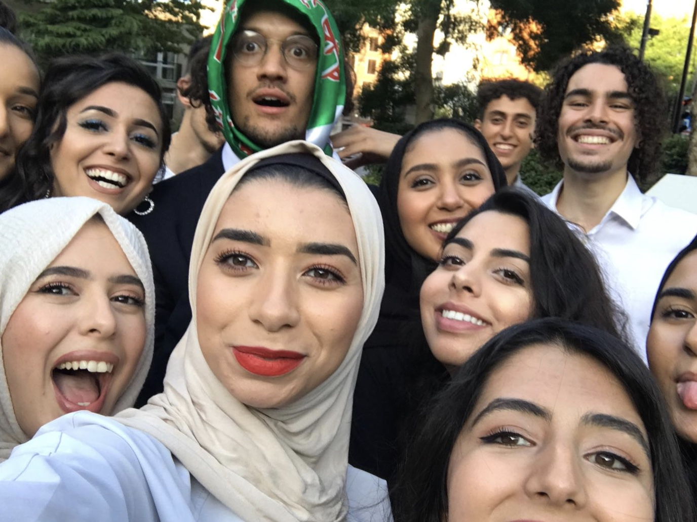
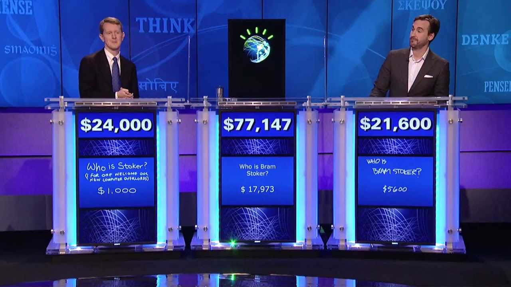
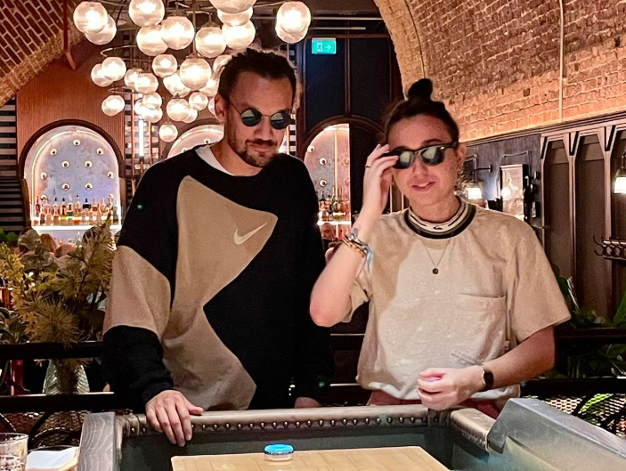

Hiya!
My name's Daniel Flanagan, I'm 25 years old and I'm originally
from a little Yorkshire village callled Barnby Dun in Doncaster.
Barnby Dun stands apart from the post-industrial hell-scape that surrounds
it in the rest of Doncaster. It's an idilic little community which
historically had a very wokring class character. In recent years that
seems character seems to have given way to something a little less
charming, but it was definitely a nice place to grow up.

Since about 2016 I've lived in London. I moved here to study for a degree in History at Queen Mary, University of London. I graduated in 2019 and from there went to study for a Masters in History at University College London in Intellectual History and the History of Political Thought. I had an amazing time at university. Obviously, I enjoyed the social side of things, (sometimes a little too much) but I also surprised myself with just how much I got into my studies. I've always been a bit of a nerd, but I never thought I'd be the kind of person who would spend hours in the library reading books about 17th century political philosophy. I guess I was wrong! 
I've always had a an interest in computers and technology, however things this interest has always revolved around getting the most out of the systems and has rarely involved any kind of programming. Nevertheless, my love of philosophy and technology has always caused me to think about what what could be possible 'in theory'. I remmember that when my year 8 history class was learning about the industrial revolution, I was thinking about how the given the task of writing a persuasive speech on the topiuc of "the most important invention of the last 100 years", I wrote mine on IMB's Watson an Artifically Intelligent Supercomputer that had just won Jeopardy. I was only a young teen at the time and, although my love of Sci-fi definitely made my mind run a bit wild with the potential of this technology which was still in its infancy at the time, it definietly showed me to be more of an optemist. 
my Interest in web development has definitely come from a more profound Interest in getting computers to do what I want them to do. More concretely, in my current work at a London-based homelessness charity, the main way in which we provide support to those that need it is by providing a web-based platform that allows support workers to connect the people they're with whom they work with work with our partner employers. It's a great system in theory. However, because we're still a small charity, our website is still very much in its infancy. It has a lot potential, but it's not quite there yet. I've been working with it for a few months now and our team is starting to get a bit frustrated with the limitations of the system which is designed and maintained by a free-lancer which we only have part-time. I've been thinking about how I could help to improve the system and I think there's a lot that I can do to help with the right skills before I inevitably need to move on. 